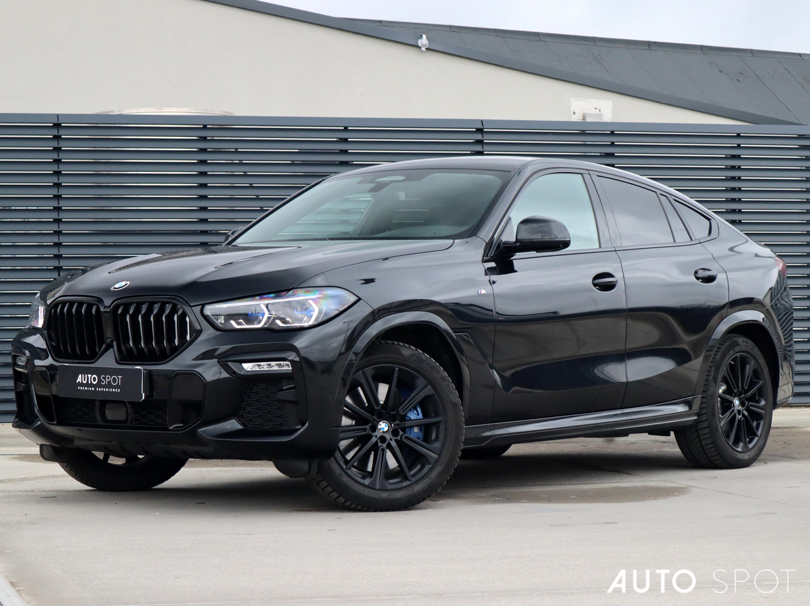

BMW
BMW X6
جميع نسخ BMW X6 مع المواصفات الرسمية مرتبة في صفحة واحدة.
جميع نسخ BMW X6 مع المواصفات الرسمية مرتبة في صفحة واحدة.

| المحرك | 3.0 لتر 6 أسطوانات مستقيمة تيربو + نظام هجين خفيف |
| عدد الأسطوانات | 6 |
| القوة | 375 حصان |
| عزم الدوران | 540 نيوتن متر |
| ناقل الحركة | 8 سرعات Steptronic |
| نظام الدفع | xDrive رباعي |
| التسارع (0-100) | 5.4 ثانية |
| السرعة القصوى | 250 كم/س |
| عدد المقاعد | 5 |
| نوع الوقود | بنزين |

| المحرك | 4.4 لتر V8 توين تيربو + نظام هجين خفيف |
| عدد الأسطوانات | 8 |
| القوة | 530 حصان |
| عزم الدوران | 750 نيوتن متر |
| ناقل الحركة | 8 سرعات Steptronic Sport |
| نظام الدفع | xDrive رباعي |
| التسارع (0-100) | 4.3 ثانية |
| السرعة القصوى | 250 كم/س |
| عدد المقاعد | 5 |
| نوع الوقود | بنزين |